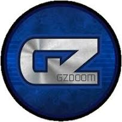

A classic Doom II-inspired single-player campaign.
About the Project
DOOM: The DLC Investigation is an independent Doom-style
campaign project set around the mysterious Delta Lunar
Corporation.
The story follows an investigation into a facility affected
by an unknown incident. Explore abandoned locations,
uncover evidence and discover what happened.
The project uses Freedoom resources and is designed
around the classic Doom experience.
Campaign
The campaign is divided into four major chapters.
01. Investigating Relations to DLCMAP01 – MAP06
02. Bustin' in the DLC In development
03. Unknown AnomalyIn development
04. Destroying the FreaksIn development
Supported Source Ports
This project requires a compatible Doom source port.
Choose one of the following engines.

GZDoom
Recommended
GZDoom is an advanced, modern Doom source port
supporting enhanced rendering, scripting,
and extensive modding capabilities.
It is the recommended engine for playing
DOOM: The DLC Investigation.